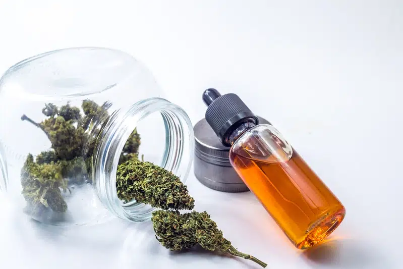

Tipos de aceites de marihuana
Hoy en día podemos encontrar en el mercado varios productos derivados de la planta de cannabis con diferentes nombres, y esta gran variedad de opciones puede llevar a la confusión. Esta confusión se centra sobre todo en los diferentes formatos de aceite que les vamos a presentar en este post.
Aceite de marihuana BHO (Butane Honey Oil)
El aceite de marihuana BHO es una extracción que concentra los principios activos y aromáticos de la planta de cannabis utilizando butano liquido como solvente. Por supuesto, el butano se elimina posteriormente mediante el uso de diferentes técnicas de purgado. Esta forma de extracción es muy famosa en E.E.U.U y en Canadá y cuenta ahora con cada vez más aficionados en Europa, como lo demuestra el éxito de la Dab-a-Doo y otros eventos cannábicos que reúnen a los amantes de los concentrados de marihuana.
El BHO tiene un nivel muy elevado de cannabinoides y puede llegar fácilmente a concentraciones del 70 o 90 % de THC. En la mayoría de los países, para obtener este concentrado el consumidor debe realizar una extracción de aceite de cannabis BHO a partir de plantas procedentes de la autoproducción. Este formato de aceite de cannabis (BHO) se consume por lo general en forma de Dab, o con un vaporizador portátil discreto que tiene un funcionamiento muy parecido al de los cigarros electrónicos.
Aceite de marihuana de Rick Simpson
Es uno de los formatos de extracción de cannabinoides más conocida gracias al personaje epónimo, el aceite de Rick Simpson es una extracción de cannabis realizada con otro solvente diferente al Butano. La receta original hablaba de nafta y luego de alcohol isopropílico, ahora se recomienda siempre utilizar alcohol de grado alimenticio (etanol puro), el cual resulta mucho menos tóxico. Al contrario que el aceite BHO, la extracción de aceite de Rick Simpson necesita ser calentada durante mucho tiempo para eliminar el solvente, lo que provoca la descarboxilación de los cannabinoides desde su forma ácida (THCA, CBDA…) hacia su forma activa (THC, CBD…). Es por este motivo que este tipo de aceite puede ser utilizado directamente por vía oral o sublingual.
Cuidado: El aceite de Rick Simpson contiene THC; por eso está prohibida su venta en la mayoría de países. Hay algunos estafadores que se aprovechan de la gran demanda de los pacientes para ganar dinero.¡El 100% de los vendedores que hay en internet de aceite de Rick Simpson son estafadores! Estos últimos están sobre todo activos en las redes sociales como Facebook. En la mayoría de los casos, estos estafadores se quedarán simplemente con el dinero sin enviar nada. A veces, el comprador llegará a recibir una botella de aceite, pero cuya composición no tiene nada que ver con la anunciada en comparación al nivel de cannabinoides que debería tener. La única forma de obtener este aceite de cannabis de Rick Simpson es realizando una extracción casera. Para este tipo de extracciones se requiere de variedades de marihuana que contengan CBD y THC, para aprovechar la sinergia de las propiedades terapéuticas de estos dos importantes cannabinoides. Resulta interesante destacar que el aceite de Rick Simpson extraído con etanol es idéntico al aceite de cannabis que se ofrecían en los coffeeshop holandeses hasta los años 90, antes de que fuera prohibido por su elevada concentración en THC. Este se consumía simplemente en añadiendo un poco de aceite alrededor de un cigarro de tabaco. El etanol tiene el inconveniente de extraer también la clorofila y otros componentes indeseables de la marihuana (se trata de un solvente mucho menos selectivo que el butano), es por esto que este tipo de aceite tiene un color muy oscuro acompañado por un fuerte sabor herbáceo, en caso de realizarlo inadecuadamente.
Aceite de cáñamo CBD
El cannabis o marihuana y el cáñamo son la misma planta. A pesar de esto tenemos la costumbre de hablar de cannabis cuando nos referimos a la planta que tiene cogollos ricos en THC (el cannabinoide responsable en gran parte de los efectos eufórico de la planta), y llamar cáñamo a las variedades cultivadas para obtener las fibras, y que tienen un nivel muy bajo de THC (estas últimas no provocan ningún efecto psicotrópico). Por lo tanto tienen grandes proporciones de Cannabidiol CBD, un cannabinoide muy famoso por sus diferentes propiedades terapéuticas.
Así pues se hace posible realizar una extracción de cannabinoides a partir de las flores del cáñamo para poder concentrar los principios activos. En general, se diluyen en aceite vegetal (oliva, coco…) para facilitar su dosificación y su utilización. Como el aceite de cannabis CBD no contiene trazas de THC (menos de 0,2%), su venta y su uso son legales en la mayoría de países. Este tipo de aceite es adecuado para un uso medicinal ya que no tiene ningún efecto recreativo. El aceite vegetal de semillas de cáñamo tiene excelentes propiedades nutricionales y cosméticas. Una particularidad de este aceite vegetal es que contiene todos los ácidos grasos esenciales para el ser humano, y en sus correctas y optimas proporciones, en concreto la ratio Omega 3/Omega 6 la cual es cercana al 1/3 : 16,5% de ácido alfa-linoleico (ALA, Omega 3) 56,3% de ácido linoleico (AL, Omega 6) 13% de ácido oleico (Omega 9) El aceite de semillas de cáñamo biológico también tiene dos tipos de ácidos grasos muy raros y poco comunes en la alimentación humana: 3,2% de ácidos gama-linoleico (AGL, Omega 6), con propiedades anti-inflamatorias y aproximadamente un 1% de ácido estearidónico (SDA, Omega 3), este último es uno de los principales componentes de las células del cerebro y de la retina. Este aceite vegetal resultante de las semillas de cáñamo resulta perfecto para cocinar en frío, pero jamás se debe calentar, para evitar que los frágiles Omega 3 se oxiden y que el aceite se ponga rancio. Por esta misma razón, es importante conservar siempre este aceite en el frigorífico, sobre todo después de haberlo abierto. A nivel gustativo, el sabor del aceite de semillas de cáñamo recuerda un poco al aceite de nueces, siendo más dulce y acompañado por notas herbáceas.
Aceite vegetal con cannabis
Los principios activos de la marihuana son solubles en grasas de modo que también es posible realizar extracciones de cannabinoides usando aceite vegetal, como por ejemplo en aceite de oliva o aceite de coco, obteniendo como resultado aceite vegetal con cannabis. Este necesita ser calentado durante algún tiempo para descarboxilar los cannabinoides en su forma activa, antes de ser dosificada en forma de gotas bajo la lengua o directamente mezclada en la alimentación, como puede ser una ensalada. Esta forma de aceite es usada principalmente en pacientes que quieren beneficiarse de las propiedades medicinales de la marihuana. Esperamos que este artículo os haya permitido aclarar la diferencia entre lo que son los aceites de cannabis y de cáñamo, cada uno con propiedades muy diferentes. ¡Así como el aceite BHO no es apto para realizar una vinagreta, tampoco se puede hacer un dab con aceite de cáñamo CBD!